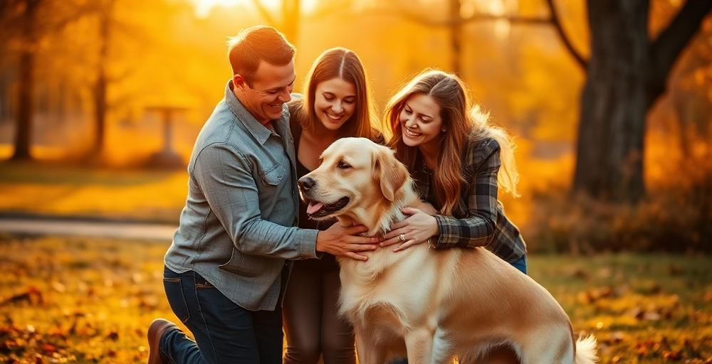

Encontre seu melhor amigo
de volta para casa
O AuChei conecta tutores de animais perdidos com pessoas que encontraram pets. Juntos, reunimos famílias e damos esperança a quem mais precisa.
Thor foi encontrado!
há 2 dias · Florianópolis
Taxa de Sucesso
em reunir pets com suas famílias. Nossa comunidade faz a diferença.
Juntos fazemos a diferença
Usuários Ativos
Nossa comunidade cresce todos os dias, com milhares de pessoas ajudando a encontrar pets perdidos e reunir famílias em todo o Brasil.
+200 novos usuários por semana
Como o AuChei ajuda você
Tudo que você precisa para encontrar um pet perdido ou ajudar um animal a voltar para casa.
Reportar Perdido
Publique rapidamente um alerta com foto, localização e descrição do seu pet. Nossa comunidade ajuda a divulgar e encontrar.
Reportar Encontrado
Encontrou um animal perdido? Registre aqui e ajude a reunir esse pet com sua família o mais rápido possível.
Oferecer Recompensa
Aumente as chances de encontrar seu pet oferecendo uma recompensa. Mais pessoas vão se mobilizar para ajudar.
Chat Seguro
Converse diretamente com quem encontrou ou reportou um animal. Comunicação segura dentro da plataforma.
Mapa Interativo
Visualize animais perdidos e encontrados em sua região. Encontre casos próximos a você com facilidade.
Comunidade Ativa
Faça parte de uma rede de tutores e voluntários que se dedicam a reunir pets com suas famílias todos os dias.

Cada reencontro importa
Nossa plataforma já ajudou milhares de famílias a reencontrarem seus pets. Com alertas rápidos, buscas por região e uma comunidade ativa, aumentamos as chances de um retorno seguro.